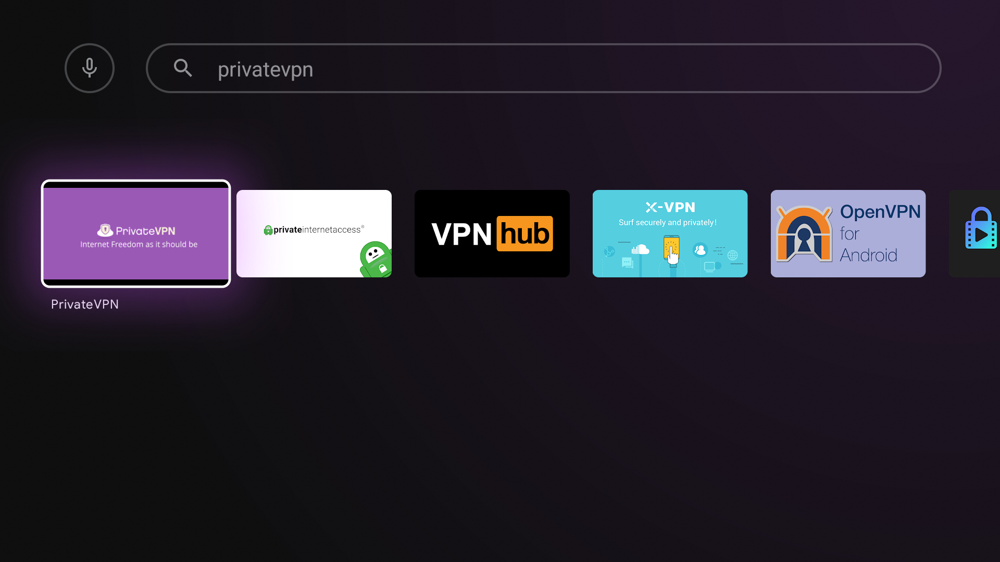

Install PrivateVPN app on your Android TV
Navigate to and open Google Play Store on your Android TV box/device

Search for PrivateVPN application using voice or text and Install it
PrivateVPN app should appear in the results as seen in the image below

Select and open it to Install

Please wait until PrivateVPN app is installed on your Android TV
Once installed, Open PrivateVPN app.
Allow necessary permissions and Login with your PrivateVPN credentials
First screen of PrivateVPN app appears. Select Log In to continue.
Carefully enter your PrivateVPN.com credentials as seen in the image below. Select Log In again to continue.
Note: A lot of users end up with white-space before or after username or password, resulting in authentication failure during login.
Select Allow to continue
Select OK to continue
Although not relevant on Android TV setups as of yet, Select Allow to continue
Voila! You have configured PrivateVPN app on your Android TV correctly.
Select a server of your choice and Connect to Enjoy your favorite streaming services!
As the text in the bottom of the screen says. You can tap Power icon to turn on and off your VPN.
It will connect you to default server pre-configured in App i.e. Sweden. Once connected, your new Public IP from PrivateVPN is displayed too.
You can navigate to and select Change therein to enter Server list as seen in the image below to select a Location of your choice to Connect.
Tip: Sometimes, you are asked to connect to Dedicated IP server owing to specific streaming service requirements. It is a separate list to the right of All Servers list in our Server list section as seen in the image above.
As you can see in the image below, now we are connected to London in United Kingdom.
Enjoy your encrypted Internet and stream your favorite content on your Android TV now!